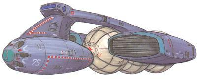

| Jicco Missile Boat |
|
|  | |
General and Technical Data |
|
|
Unit Type: gunboat Operator: Zeon Duchy Propulsion: 2 x rocket engine Fixed armaments: 7-tube missile launcher Technical and Historical Notes The Jicco gunboat is a small, fast warship intended mostly for reconnaissance and attacks against stationary targets. It uses the same engine pods as the Musai-class, giving it excellent speed and acceleration for such a small ship, and its three large fuel tanks give it an extremely long range. The Jicco is lightly armored and armed, and is not designed to face direct enemy fire, instead being used as a gunboat to deliver its missiles and then retreat. Their small radar signature and low reactor output also enables them to quietly sneak into enemy territory and transmit back information they may have, making it an effective surveillance craft. |
 RPG quick stats sheet
RPG quick stats sheet